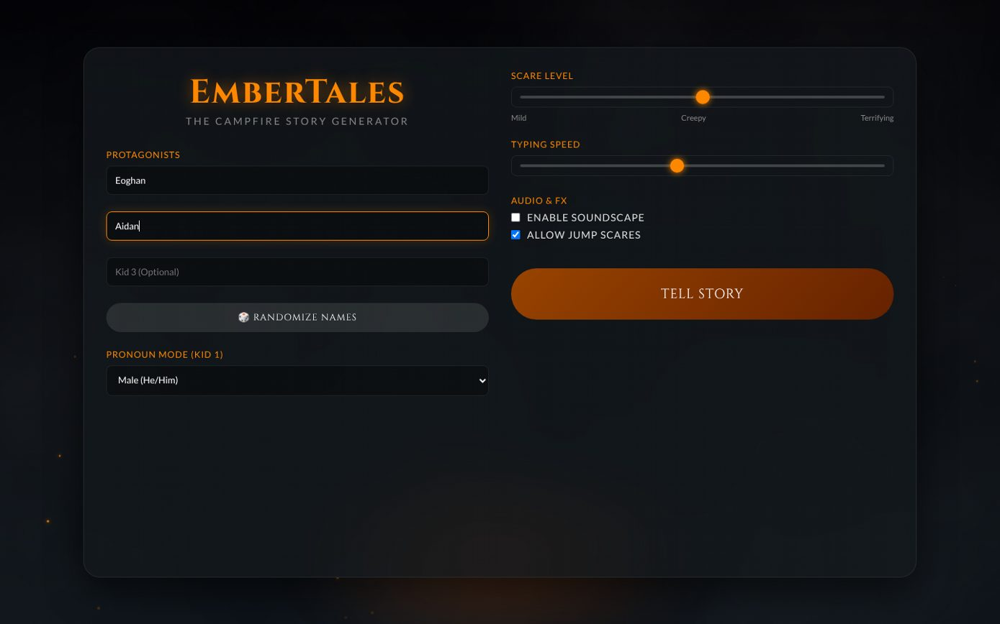

EmberTales
An interactive web app that turns any night into a campfire story, with custom characters, a choice of scare level and an atmospheric soundscape.

What needed solving
Gathering around a campfire often leads to storytelling, but coming up with an engaging, original story on the spot is hard. People fall back on the same old ghost stories or run out of ideas quickly.
There were few tools that sparked creativity and guided group storytelling in a fun way without the screen taking over the social experience.
How I approached it
Inspired by my time as a camp counselor in Maine, I built EmberTales to spark imagination without screen time dominating the hangout. It works as a story architect: you add names, choose how scary it gets, and the story unfolds with a dramatic typewriter reveal.
The interface is distraction-free and themed to set the mood, guiding the group through a structured story that everyone in the circle can enjoy.
What it does
Dynamic stories
Unique story starters and plot twists, shaped by the scare level you choose.
Your characters
Add friends’ names and they’re woven straight into the adventure.
Ambient audio
Built-in soundscapes like crackling fire set the mood, with optional jump scares.
Cinematic mode
A typewriter reveal with adjustable speed for dramatic reading aloud.
Low-light design
A dark, mobile-first interface made for reading outdoors without blinding anyone.
A closer look